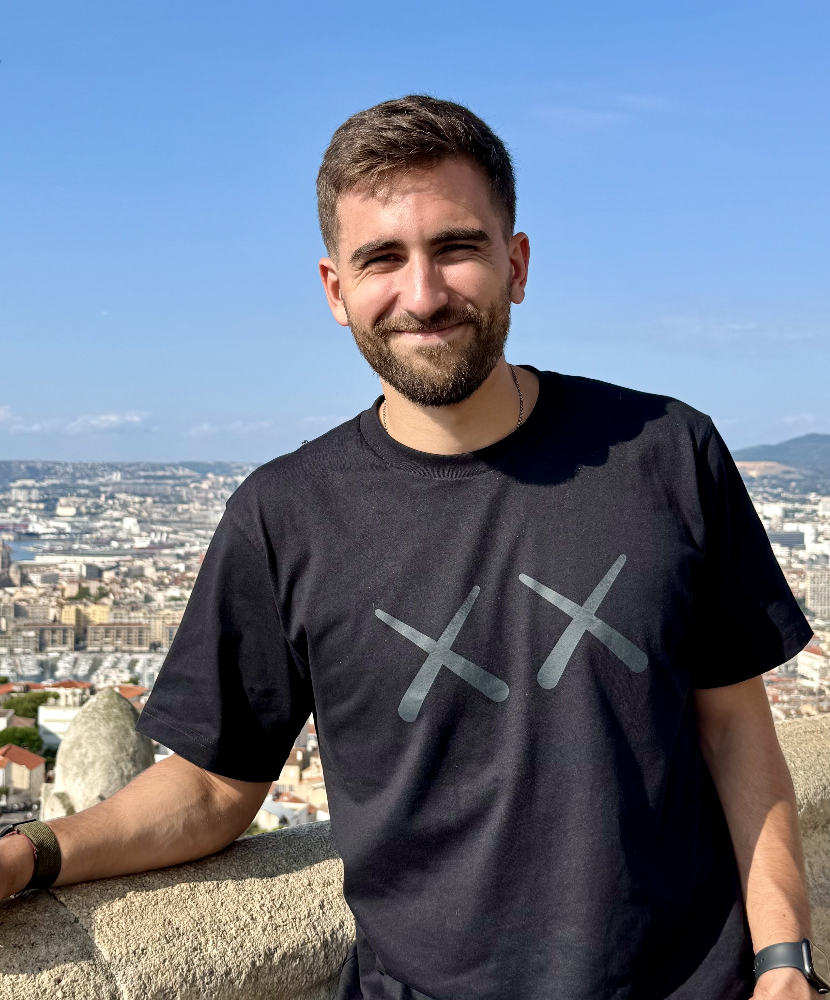

About Me
Hello 👋! I recently completed my PhD in Computer Science at Sorbonne Université in Paris. My thesis, titled "Algorithms Under Uncertainty: Robust Methods and Decision-Theoretic Evaluation", was carried out at LIP6 within the Operations Research group (RO). My research explores how algorithms can integrate machine learning predictions while maintaining robust performance guarantees. In particular, I work on learning-augmented algorithms, robust optimization, and decision-theoretic evaluation of algorithms.
I was fortunate to conduct my PhD under the supervision of Spyros Angelopoulos and Christoph Dürr.
Before moving to Paris, I completed both my Bachelor’s and Master’s degrees in Applied Mathematics and Informatics at Novosibirsk State University, where I had the privilege of working under the supervision of Adil Erzin. His mentorship strongly influenced my interest in algorithms and optimization.
News
- 2026 – Paper accepted to ICLR 2026: Decision-Theoretic Approaches in Learning-Augmented Algorithms.
- 2025 – Completed PhD in Computer Science at Sorbonne Université (LIP6).
- 2025 – Paper published at AAAI 2025: Scenario-Based Robust Optimization of Tree Structures.
Short CV
- PhD in Computer Science, Sorbonne Université – LIP6
October 2022 – September 2025
Team: RO (Operations Research)
Thesis: "Algorithms Under Uncertainty: Robust Methods and Decision-Theoretic Evaluation" - Master of Science, Novosibirsk State University
September 2020 – July 2022
Applied Mathematics and Informatics
Chair of Theoretical Cybernetics - Bachelor of Science, Novosibirsk State University
September 2016 – July 2020
Applied Mathematics and Informatics
Chair of Theoretical Cybernetics
Publications
-
Decision-Theoretic Approaches in Learning-Augmented Algorithms
with Spyros Angelopoulos and Christoph Dürr. International Conference on Learning Representations (ICLR), 2026. [paper] -
Scenario-Based Robust Optimization of Tree Structures
with Spyros Angelopoulos, Christoph Dürr, and Alex Elenter. The 39th Annual AAAI Conference on Artificial Intelligence (AAAI), 2025. [paper] -
A 4/3 OPT+2/3 Approximation for big two-bar charts packing problem
with Adil Erzin, Alexander Kononov, and Stepan Nazarenko. Journal of Mathematical Sciences, Vol. 269(6), 813–823, 2023. [paper, doi] -
A Posteriori Analysis of the Algorithms for Two-Bar Charts Packing Problem
with Adil Erzin, Stepan Nazarenko, and Roman Plotnikov. Advances in Optimization and Applications. OPTIMA 2021. CCIS, vol. 1514, 201–216. Springer, Cham, 2021. [doi, slides] -
A 3/2-approximation for big two-bar charts packing
with Adil Erzin, Stepan Nazarenko, and Roman Plotnikov. Journal of Combinatorial Optimization 42(1), 71–84, 2021. [paper, doi] -
Two-Bar Charts Packing Problem
with Adil Erzin, Stepan Nazarenko, and Roman Plotnikov. Optimization Letters, 15(6), 1955–1971, 2020. [paper, doi] -
Optimal Investment in the Development of Oil and Gas Field
with Adil Erzin, Roman Plotnikov, Alexei Korobkin, and Stepan Nazarenko. Mathematical Optimization Theory and Operations Research. MOTOR 2020. CCIS, vol. 1275, 336–349. Springer, Cham, 2020. [paper, doi]
Work Experience & Projects
- ANR Predictions: Algorithms with Predictions - Member (Project Details) (October 2023 - Currently)
- Algorithm Development for Gas Processing and Transport Optimization (Gazpromneft STC, Summer 2020)
Designed a cost-minimization algorithm for gas processing and transport in a gas field, leveraging metaheuristics and advanced optimization techniques to improve operational efficiency. - Junior back-end developer (Internship), Center of Financial Technologies (CFT), Summer 2019
Focused on bank transaction prediction using Machine learning (ML) and Natural language processing (NLP).
Honors & Awards
- "The most useful and promising research" award at the Sobolev Institute of Mathematics competition for the research talk "Approximate algorithms for the Two-Bar Charts Packing Problem" (2021).
Life
Outside of research, I enjoy staying active. I train CrossFit and also spend time running, cycling, and swimming. Each of these sports has its own charm, although CrossFit probably wins when it comes to making you question your life choices during a workout.
At some point I would like to try a triathlon. For now, I’m still in the phase of trying to get reasonably good at the three disciplines separately before combining them all together.
Feel free to reach out if you would like to talk about research, sports, or potential collaborations.